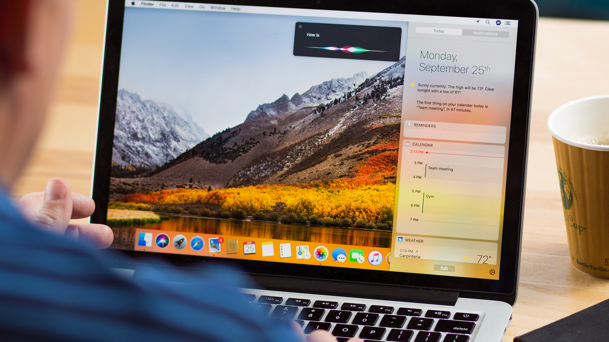

Setting up deep learning environment the easy way on macOS High Sierra

Source: Google Images
This is from a long time Ubuntu user who recently picked up a MacBook Air for all the portability it has to offer.
I am completely new to macOS. I had to look around and experiment to install all the packages I was enjoying on Ubuntu. I decided to put together a simple setup guide to get the deep learning environment (particularly for Computer Vision) up and running on macOS the easy way.
I am documenting the process I followed to get things working. Some of the process may not be the efficient / optimized way but the goal here is to get the job done with minimal efforts / frustration.
Target Audience
Someone coming from Ubuntu background, completely new to macOS, just want to set things up for deep learning and doesn’t want to feel “I wish I didn’t pick up a MacBook”.
. . .
Following are the basic softwares/packages you need for deep learning. This is not an exhaustive list by any means. These are the basic things I work with for Computer Vision. Depending on your area of interest the list may vary.
- python3
- virtualenv
- opencv
- dlib
- tensorflow
- keras
Before we start ..
On Ubuntu, we all know that we can just go to the terminal and sudo apt-get install
It turns out that macOS is also a Unix based Operating System. So, luckily we have the same terminal we are all familiar with. But with some changes in the way we interact through commands.
For example, instead of apt-get package manager we have brew (HomeBrew) here.
I have seen people recommending to install Xcode (an IDE for developers from Apple) as the first thing to do. But I don’t think it’s absolutely necessary. I was running Python scripts fine without actually installing Xcode and also Xcode is a heavy piece of software to run.
So, the bottom line is you will be pretty much fine without Xcode.
Getting HomeBrew
/usr/bin/ruby -e “$(curl - fsSL https://raw.githubusercontent.com/Homebrew/install/master/install)"
Open up Terminal and enter the above command. It will install brew and only the necessary xcode command line tools.
Python 3
brew install python3
This will install latest version of Python for you. You can check whether it’s correctly installed by typing python3 on the terminal.
brew install pip3
This will install the package manager for Python3. You can check whether it’s correctly linked to Python3 by typing
pip3 -V
This should tell the version of pip and the version of Python it’s linked to. (Should be 3.x not 2.x)
Virtual Environment
Virtual environment is a super useful tool to keep things clean and separate. All the Python packages you install will be virtually contained within a particular virtual environment you create and will not mess with the things outside. Trust me, this will save you a lot of frustration in future.
pip3 install virtualenv virtualenvwrapper
We need to update .bash_profile file before start enjoying the benefits of virtual environment. (There is no .bashrc in macOS)
If you can’t find .bash_profile file in your home directory, you can create one.
vim ~/.bash_profile
Add the following few lines and save the file.
# virtualenv and virtualenvwrapper
export WORKON_HOME=$HOME/.virtualenvs
export VIRTUALENVWRAPPER_PYTHON=/usr/local/bin/python3
source /usr/local/bin/virtualenvwrapper.sh
In Ubuntu, Python location used to be /usr/bin/python3
Now type source ~/.bash_profile on the terminal. Make sure it doesn’t throw any error.
Now you are all set to create your first virtual environment.
Creating Virtual Environment
You can create as many virtual environments you want with any name you wish.
mkvirtualenv cv -p python3
The above line creates a virtual environment named cv
Now you are inside the virtual environment cv . You can look for (cv) sign at the beginning of shell prompt.

Inside the virtual environment cv
You can come out of the environment by typing deactivate and enter the environment by typing workon .
Some of the dependencies ..
Before we start pip installing Python packages, let’s take care of some of the dependencies these packages have.
Come out of the virtual environment by typing deactivate.
brew install cmake
This installs cmake which is needed for dlib.
To display image outputs from opencv or dlib , we need to install X11. Download X11 from xquartz.org and install it by double clicking the downloaded file. Once it finishes installing you might want to logout and log back in.
So, that’s it. Let’s get pip installing.
OpenCV
Go into the virtual environment by typing
workon cv
Make sure the (cv) sign appears in the command line.
Let’s install some of the pre-requisite/other useful packages.
pip install numpy h5py pillow scikit-image
Install OpenCV for Python by typing
pip install opencv-python
Note: opencv-python is a community supported package, not officially from OpenCV. It may be a bit slow since we are not compiling from source on our system. But this is the easiest way to get going.
Dlib
pip install dlib
This might take a while. Please be patient till it completes the installation. (No, it’s not hung)
TensorFlow
pip install tensorflow
This installs the cpu version of tensorflow. Again, we are not compiling from source. So, it’s not optimized for our system. But we will be fine with this. (Ignore the messages it prints about how it can be optimized for your system while importing tensorflow on the code)
Keras
pip install keras
Keras is a very beginner-friendly deep learning library. It runs on top of tensorflow. You can build models very quickly using keras.
Test all the packages installed by importing them. Type python on Terminal. It should give you the python shell. Import the packages one by one and check their version. Make sure you don’t face any error. If so, installation was not complete.
import cv2
print(cv2.__version__)

import packages and check their version
Summary
We installed the basic packages/software needed for deep learning (particularly for computer vision) on macOS High Sierra the easiest way possible without dealing with much frustration.
I hope this helps someone out there like me, getting started with macOS. Feel free to share your comments here or you can reach out to me on Twitter.
Peace.